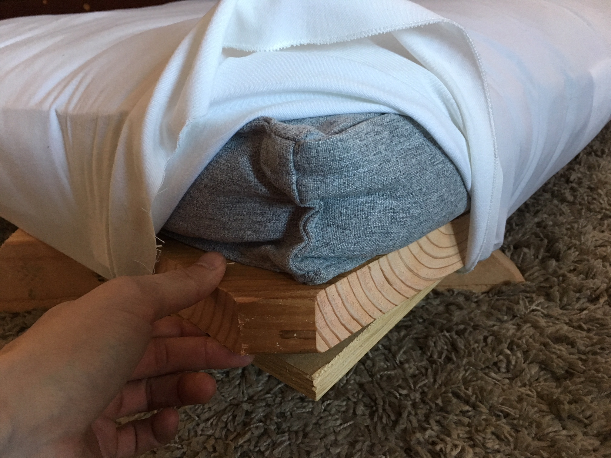
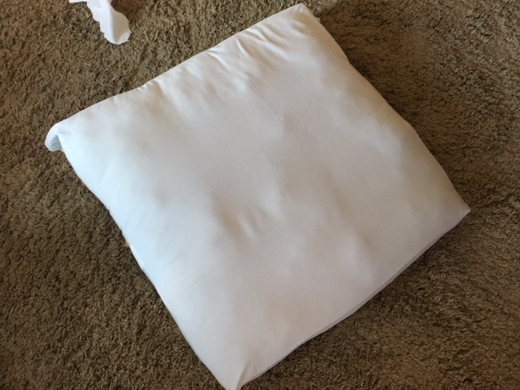

Recently I have been interested in the duality of the mental and the physical.
How does a physical experience trigger a mental experience?

I wanted to explore what connects and separates the two, and I began with the idea of discovery.
Could discovering a miracle cause a rebirth of the psyche?
I have been meditating over the infinite possibilities that could exist somewhere in the far reaches of the universe, and the impact that it would have on the mind to witness a true phenomenon that invalidated all its preceding understanding.
To the mind it would feel like the physical world had changed, but it would just be the understanding of reality that had grown.
This belittling expansion of the mind to forms unfathomable to us in the present is an idea that I wonder about.
In this body of work, I wanted to explore the concept of physical and mental migration.
How are moving to a new physical place and moving to a new mentality similar?
Can the mind circumvent an idea similarly to the body physically circumventing an object in space?
If physical migration leaves a physical footprint, does mental migration leave a mental footprint?
Through considering the perspectives of others we can expand our consciousness to become bigger than ourselves.
I was also captivated by water and the idea of its surface representing a permeable layer separating the physical and mental.
Our idea of portals would theoretically allow movement through physical reality but what if portals could be doors into the mind?
Through this exhibition I wanted to create a physical experience and, in turn, a mental experience for my audience.
My hope is that the physical action of being exposed to these questions provokes a mental reaction of new self-reflection and curiosity about the world around you.
ARTIST STATEMENT
My work draws parallels between the real tangible real space and mental space that we inhabit and fluctuate between on a constant basis. I love pondering the unanswerable questions, infinite possibilities, and imaginable events that occur and exist somewhere out in the far reaches of space. Whether it be time-based animated video or an interactive live video-based work, I hope to spread my curiosity and mentality to others by placing my viewers into the spot of the main character and projecting my physical and mental experiences and questions onto them. The duality of the mental and the physical creates the perfect medium for my work to exist both in the mind through mental experiences and feelings, and in physical space through video and animation. My work straddles the line between these two environments and highlights that they are not always separate, but instead are directly related in every human experience.
The foundation for my current work includes a background in engineering, experience in 3D modelling and coding, a love for film, and a love for math and science. I am always curious about the physical world around me, but lately I have become more curious about specifically how I mentally perceive the world around me.
In my short film, CATALYST, I explored how a physical experience can in turn create a mental experience. It was inspired by love and math and science, and my curiosity about all the infinite possibilities that exist out in the far reaches of space, and how it would feel to discover something that made all of our past knowledge and theories obsolete. I was interested in the creating the feeling of belittlement in the mind, and the rebirth of the psyche. The film was premiered inside a viewing installation that I constructed called The Expansion Room in which the viewers laid down on square, white cushions and watched the film on a screen 8 feet above them on the ceiling. The room was all black except the screen and the cushions, and my aim was to make a physical space to exist outside of time and house the experience I was attempting to incept into my viewers’ minds. By making a space in which the rules of reality were constructed by me alone, I was able to visually create physical experiences for my audience, and then allow them to have their own mental experiences as a result. My hope was that the questions I was presenting would give them a similar reactionary mental expansion of curiosity about the world around them.
Another short film, titled MIGRATION, similarly explores the duality of the physical and the mental and how they are related. I was thinking about how circumventing an object in space could be similar to circumventing an idea in the mind. In this film, the main character was meant to be the viewer, and all of the animated scenes are meant to be ambiguous in whether they take place in physical space or mental space. I utilized the power of spoken words when making this film, as the voice inside our own subconscious. My hope for this film was that my viewers left with a new understanding and power to move around an idea in their mind and consider the perspectives of others, expanding their mental energy and influence in the universe.
These works attempt to make sense of the duality that we all inhabit daily, and the barrier between these two worlds that our consciousnesses are constantly permeating. Working in digital media excites my passion because using technology allows me to create experiences and feelings never before explored. Because I have a passion for film and movies, I love having all the creative freedom when telling a story. 3D modeling also allows me to create more than just my own story, but my own world, and gives me the freedom to weave experiences however and wherever I want.
THE PROCESS
CREATING THE FILMS
I used Cinema 4D, FL Studio 20, and Adobe Premier


THE CLOUD CUSHIONS
I bought dog beds from Costco... they were so comfy!


INSTALLATION AT THE HAMMER THEATRE